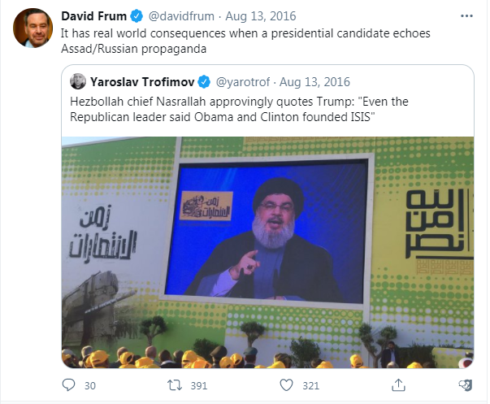
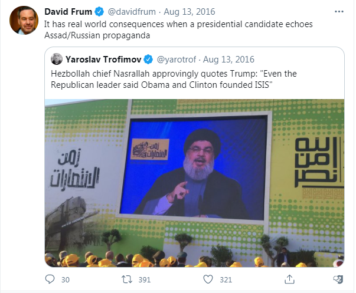
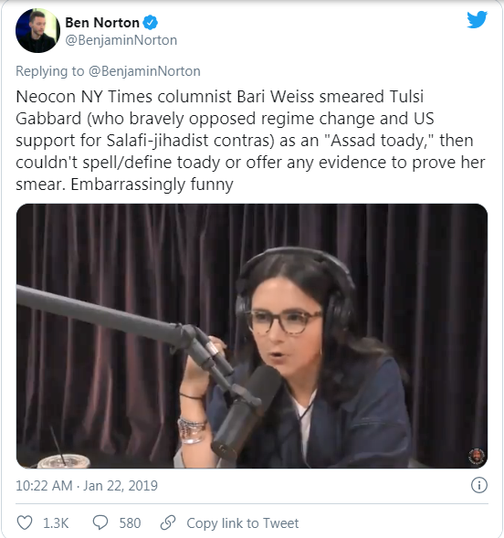
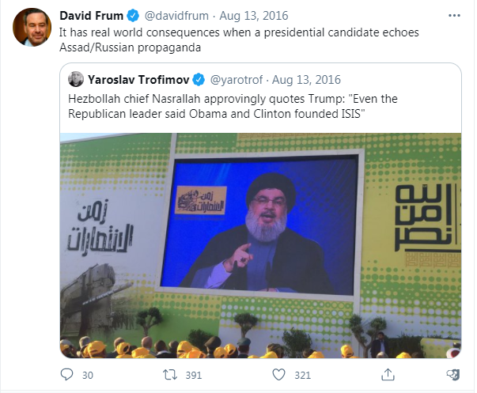

Calculating the Deaths From War Propaganda, 2000-2020
February 16th, 2021
It occured to me, when I saw yet another call for censorship from Kikes on Twitter, to take a look at a certain group of people who they are not calling for censorship of. Yes that's right goy, I'm refering to war propagandists.

David "Creepyface" Frum
BTW, David Frum also claimed that Iran was 12 months away from getting nuclear weapons... back in 2004. So I guess it's about to happen any moment now.
But really, how many innocent people are dead because of these people lying us into Iraq and Afghanistan? Well, the best estimations of civilian casualties from the second Iraq War somewhat vary. Iraq Family Health Survey estimates 151,000 violent deaths. PLOS Medicine Survey lists 460,000 total deaths, with 60% directly attributable to violence, or about 276,000. The Lancet survey estimates 601,027 violent deaths, and 650,000 total deaths.

A dead US Soldier from Iraq
Let's go ahead and say that, while we care quite a bit more about them, the number of allied soldiers murdered by our government lying them to their deaths in Iraq is not a huge amount of the total. There were 4,497 US Soldiers killed in Iraq, and while it's a bit harder for me to find the total allied soldiers killed, there were actually less of those than I would have thought, an estimated 318, bringing the total to just under 5,000.
 Partly to make the numbers easy, and partly because I think it's honestly very close to our best, most accurate estimations, let's say that 500,000 people were murdered in the war started by the lie that Saddam Hussein had Weapons of Mass Destruction and was an imminent threat to invade the United States of America. Of those 500,000, 5,000 were our soldiers, the rest were Middle Easterners, most of whom were innocent civilians.
Partly to make the numbers easy, and partly because I think it's honestly very close to our best, most accurate estimations, let's say that 500,000 people were murdered in the war started by the lie that Saddam Hussein had Weapons of Mass Destruction and was an imminent threat to invade the United States of America. Of those 500,000, 5,000 were our soldiers, the rest were Middle Easterners, most of whom were innocent civilians.
 Now let's take a look at the ongoing Forever War in Afghanistan. Estimations for the number of dead will be outdated by the time you read this, but the most up to date estimations appear to be 2,372 US. Casualties, 167 Canadian Casualties, and well over 110,000 Afghans murdered in this conflict. Let's say that we have 100,000 total deaths, 2,500 of which are our soldiers.
Now let's take a look at the ongoing Forever War in Afghanistan. Estimations for the number of dead will be outdated by the time you read this, but the most up to date estimations appear to be 2,372 US. Casualties, 167 Canadian Casualties, and well over 110,000 Afghans murdered in this conflict. Let's say that we have 100,000 total deaths, 2,500 of which are our soldiers.
 Add the numbers up, and these War Propagandists are responsible for the murders of 7,500 of our troops, and roughly 600,000 Arabs, mostly innocent civilians. But that's just the wars that they have successfully started. What about the wars that they have tried to start, but failed?

Add the numbers up, and these War Propagandists are responsible for the murders of 7,500 of our troops, and roughly 600,000 Arabs, mostly innocent civilians. But that's just the wars that they have successfully started. What about the wars that they have tried to start, but failed?
The Jew David Frum again
Now let's compare these amounts to the size of these countries. Afghanistan has a population of roughly 38 million, while Iraq has a very similar population of roughly 39 million. The war in Iraq therefore amounted to casualties equaling about 1.25% the population, while the war in Afghanistan works out to deaths of roughly 0.25% the population. These can be thought of as the absolute lowest baseline numbers for what war will do to a country, in terms of deaths. The more advanced the country, the more murders would be required.
The Jew Bari Weiss
I say this because they've tried to get the public behind lots of wars in recent years, and they have luckily failed at every single one. However, War is just a euphemism for Mass Murder. These are Mass Murder Propagandists, and them doing Mass Murder Propaganda and failing, is still attempted murder. These Mass Murder Propagandists have tried to start wars in Syria, Iran, and Venezuela. Again, that they weren't successful is irrelevant, it's still attempted murder.
From the New York Times
So let's get calculating! Assuming a 1% casualty rate for the population totals of those countries for our total, with 2% of that being our soldiers. and we have 28 million people in Venezuela, so 280,000 attempted murders, 5,400 of whom are our soldiers. Next we have Syria, population of 17 million, for 170,000 attempted murders, 3,400 of whom are our soldiers. Finally we have Iran, with a population of 82 million, and therefore 820,000 attempted murders, 16,400 of whom are our soldiers.
David Frum again
TDC_ARTICLE_START
NOTE: The above clip is from this youtube video, uploaded back in 2015, from the BBC. It has 2,187 views, 5 likes, and 31 dislikes. Comments are closed.
In said video, Frum says, "My own view is that we have made too much of a priority out of the Islamic State. They are a nasty bunch of characters, but they are not America's, and the West's most important strategic threat in the region, that is Iran."
TDC_ARTICLE_STOP
If we add it all up, we get a total of 1,270,000 attempted murders, with wars started with bullshit propaganda, designed to serve the racial interests of jews and the financial interests of various billionaires. Of those, about 25,200 would be our soldiers.
 Remember that, next time you hear some shrieking Kike, or Tranny lecturing you about how you need to be censored because you're "causing harm." Remember that, goy.
Remember that, next time you hear some shrieking Kike, or Tranny lecturing you about how you need to be censored because you're "causing harm." Remember that, goy.
Partly to make the numbers easy, and partly because I think it's honestly very close to our best, most accurate estimations, let's say that 500,000 people were murdered in the war started by the lie that Saddam Hussein had Weapons of Mass Destruction and was an imminent threat to invade the United States of America. Of those 500,000, 5,000 were our soldiers, the rest were Middle Easterners, most of whom were innocent civilians.
Now let's take a look at the ongoing Forever War in Afghanistan. Estimations for the number of dead will be outdated by the time you read this, but the most up to date estimations appear to be 2,372 US. Casualties, 167 Canadian Casualties, and well over 110,000 Afghans murdered in this conflict. Let's say that we have 100,000 total deaths, 2,500 of which are our soldiers.
Add the numbers up, and these War Propagandists are responsible for the murders of 7,500 of our troops, and roughly 600,000 Arabs, mostly innocent civilians. But that's just the wars that they have successfully started. What about the wars that they have tried to start, but failed?

Remember that, next time you hear some shrieking Kike, or Tranny lecturing you about how you need to be censored because you're "causing harm." Remember that, goy.